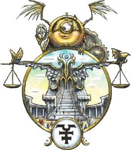
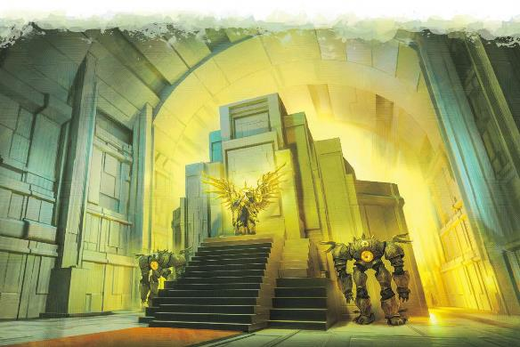

达安维有自己的韵律，它是一种不易察觉的节奏，永远维持着完美的时间规律。倘若不假思考地行动，你会无意识地跟随这一节拍。街道上人山人海，每个人都以同样的速度行进，每只脚都在同一时刻落地。要打破这一节奏，改变模式，和其他人不同呢，需要有意识地进行努力。你的直觉会迫使你并入这一秩序，跟上同一模式，成为这伟大机械的一部分。
这便是达安维，“完美之秩序”，它代表了秩序战胜无序，代表律法战胜混乱。从完美的蜂巢结构到审判凡间每一次行为的制裁者法庭，秩序在这里取得了完全的胜利。一方面，达安维展示了结构和纪律如何创造出持久的制度，以及法律如何支撑起繁荣的文明，但另一方面，它也能够粉碎个性和创造力。它表明，律法可以为秩序服务，但同时也能化作无尽的障碍，甚至暴君的刀俎。达安维包含了这其中每一条道路，它展现了律法和秩序的益处，以及采取它们所带来的的风险。
对秩序的冲动影响着达安维的一切生物。在达安维，你无法故意撒谎，随机运气的影响也会相对减少。在达安维，一切事物天生便是可靠的——非凡的好运和厄运同样难得一见。
真言位面Plane of Truth。一个生物无法自发撒谎。就像被诚实之域法术影响的那样，它仍然可以回避问题或者闪烁其词。
受阻幻象Impeded Illusion。当一个生物施展预言法术时，其范围会翻倍，如果该法术持续时间大于1分钟但小于24小时，则其持续时间也会翻倍。
绝无巧合No Chance。在一轮中第一次（或者战斗外任何时候），一个生物进行攻击检定、属性检定或豁免检定（除死亡豁免）时，将出目取为10，如果该生物在掷骰中具有优势或劣势，它只骰一个骰子，并将另一个骰子出目视为10。
时间飞逝Flowing Time。在达安维每流逝10分钟，物质位面只流逝１分钟。因此如果一个生物在达安维的法庭上花10天时间为案件辩护，那在它离开的时候，艾伯伦只过去了不到一天时间。
达安维的所有居民要么体现了律法和秩序的概念，要么为律法和秩序所束缚。大多数的魔冢、天使和魔鬼都在做着行政工作，充当位面这庞然巨械的齿轮。几乎所有达安维的居民都遵循一个不变的日常循环，每个居民都受到其被管辖范围的限制。一些当权者可以自由行动，并在多个位层间执行律法。但一位梵天神使无法在钢铁区行动，即使它认为一位冒险者正在遭受不公，因为那里由魔鬼管辖。
达安维的天使和魔鬼都使用通常的数据，但它们的外表却类似魔冢和制裁者。它们可能有着金属的皮肤或翅翼，或者看上去像是活生生的构装生物。这些不朽者是完全的律法生物，无法打破律法或违背自己的本性。达安维的所有天界生物和邪魔都具有以下的“公理心智”特性：
公理心智Axiomatic Mind。生物无法被迫行违背本性或受到的指令之事。
达安维没有许多凡人，但除了这里所讨论的之外，达安维还有其他不朽者，每一种都代表着位面的一个方面，比如说，许多位层中居住着蚂蚁一般的弗米蚁族。
魔冢是达安维最常见的居民，它们是纯粹律法的化身，并不偏袒正义或压迫一方。它们完成分配的任务，遵循每一条律法，绝不多一点，也绝不少一点。许多位层中都能找到执行基础任务的魔冢。更复杂的魔冢则在做着无尽的行政任务和执行基础的律法。
制裁者则是致力于从各个方面执行律法的强大构装体。强大的猎杀者能够被分配于执行特定打的任务，但需要注意的是，这些猎杀者和杜鲁尔的同族没有任何关系，就像达安维的魔鬼和撒法拉斯的魔鬼没有关系一样。达安维的猎杀者的“证明”特性会将目标传送到达安维的审判大厅中。
除了《怪物手册》和《魔邓肯的众敌卷册》中介绍的魔冢和制裁者（这些都可以在达安维寻到）外，还有一些其他的构装生物在这个位面执行特定的任务。尤其是一个叫“协约者”的生物位于审判大厅之下，拥有执法的绝对权力。协约者通过许多身体行动，其中一个会出席每一次制裁者法庭。这些生物也同样被称为“协约者”，但它们其实只是更加伟大的力量的代表。
达安维的天使代表为正义和更大的利益服务的律法。这些不朽者执行律法，翻同时也尽最大的努力以公义行事，确保正义得到声张。虽然天使有责任照顾凡人，但他们少有时间和随便哪个凡间生物谈天。但当他们有空的时候，他们通常善良而热心。他们全心全意地相信，律法和文明是最重要的美德，律法不能因为任何原因被冷落。
梵天神使和其他具有类似力量的天使都是达安维的本地当权者。他们可以是大臣、法官或贤者。一位梵天神使可能会被任命为被传唤至制裁者法庭的凡人的顾问，而无尽档案馆的神使着充当贤者，模组收录和记录档案，但神使会研究数据并加以反思。与此同时，强大的异界神使则作为高级的大臣，或是重要传送门和遗迹的守护者。
炽天神使居住在“全域”。一共有十三个炽天神使，每一个都被指派在艾伯伦的一个位面内监督和管理正义（而没有炽天神使对物质位面具有管理权）。然而，对于他们如何及何时采取行动，有着诸多的限制。通常而言，炽天神使必须被相应位面的合法权力机构所召唤而来，因此，尽管西拉尼亚的炽天神使哈扎里尔经常召去放逐一位光辉偶像，而瑟瑞奥特对应的炽天神使阿扎扎则从未被对应位面召唤过。当被召唤之前，他们只会默默注视着对应位面，在库尔·塔来产生往伊尔-拉什塔瓦的转变前不久，达·库尔对应的炽天神使提剌拉前去调查达库尔偏离位面轴的动向，在那之后，就再没有人见过她。
达安维的魔鬼代表为暴政和个人利益服务的律法。从本质上说，他们描绘了律法的险恶，以及秩序如何成为压迫之力。虽然达安维的天使和魔鬼互相鄙夷，但决定管辖权的严格法律意味着他们很少有所接触，也几乎不会刀剑相向。但魔鬼和天使在审判大厅的制裁者法庭上站在相反的位置辩论案件十分常见。
大多数时候，魔鬼会在铁幕这样的位层之中充当执法者和暴君。他们也可以作为守卫和哨兵，但在履职时总是过分严厉。其他魔鬼则会试图钻空子，利用律法来给自己谋利，勒索冒险者或以其他方式将律法作为武器。追猎魔和欲魔会逮捕违法者，深狱炼魔则在审判大厅担任刽子手。
每一位暴君都需要可供压迫的人民，而每一个乌托邦都需要能够享受它公正法律的居民。达安维的无数显化被称为“臣民”，正是服务于这一目的。它们具有人形的，但形状模糊不清。它们给人的印象是完全正常、平平无奇的人，通常和看向它的人属于同一物种。但无论如何努力，都不可能真正的关注到它们。和“臣民”的对话只流于表面，不会有任何明显的个性和目标。它们在战斗中不会构成威胁，如果它们受到任何伤害，就会消散，然后在几分钟内重新成形。
达安维有上百个位层，而每一个都隐喻着秩序或文明的特定方面。时间在所有位层一致，但在一些位层，居民在所有时间都在碌碌工作，而另一些位层中，对一些活动的允许时间有严格的规定。达安维有自己的历法，但这里的居民们在和来访的凡人打交道时也可以很轻易地将其换成迦利法标准历法（或者其他历法）。
使用异界传送或类似能力前往达安维会将你带到主门前。各个位层的入口在这里都有清晰的标签，一目了然，天使向导也乐于提供帮助。较小的入口由魔冢守卫，而主要入口则由角魔或异界神使把守。
通行证可以在主门获得，但违反当地法令可能或导致通行证被吊销。虽然一部分规则，比如关卡和通行证都通用，但每一个位层都有着自己的法律。通常情况下，这些都包括， 典型的比如不能偷到、除非自卫不能攻击，但位层也可能有些不寻常的法律——比如中午之后不能施展幻术。法律、惩罚和执行的范围因位层的严苛性质差异很大，取决于它是一个通常来说正义的位层（由天使管理）、公平的位层（由魔冢管理）或是严苛的位层（由魔鬼管理）。在温和的位层上，违法者可能会从天使那里得到一个富有启迪性的警告，但在严苛位层上的违法者就没有那么幸运了。某些情绪，位层的监管者可能会就地出发，如果“达安维的审判”边栏所述。而更严重的罪犯则会被带到审判大厅，去面对制裁者法庭。
达安维一些最值得注意的位层如下所述，其他位层分别表达了某种形式的文明秩序，尽管大多数对冒险者来说乏善可陈。
乌托邦式的统治、暴民的正义和无数律法的范例都在这里运作。完美农庄是一个巨大的、精心维护的的农场，展现了农业纪律的美德。43号巢是一个弗米蚁族聚居地，蚂蚁般不朽的精魂生物在那里照顾它们的女王。如果它无法让你提起兴趣，也许其他42个巢穴之一会。
|
达安维的审判Daanvian Judgment 当角色违反达安维法律时会发生什么？理论上，协约者会根据一本极其复杂的《审判法典》来确定理想的惩罚。在实践时，惩罚应当与罪行相匹配，但这取决于判决发生的地区。天使会维护法律，但力求确保惩罚公正，而魔鬼则会利用过度惩罚威胁（当然，根据《审判法典》，这完全合法）来敲诈勒索。 肉体刑法是存在的，从殴打到致残（失去一只眼睛或舌头）再到处决。这种刑罚在严苛的位层中最为常见。监禁罕有发生，但仍然存在，无论是在当地的监牢还是无望监狱。由于达安维的时间流逝，在达安维监狱中蹲一百年在艾伯伦上只会过去十年。 罚款十分常见，并非是因为达安维需要收入，而是它便于根据实际情况进行调整。像是黄金或财物这样的罚款可以立即没收，或者也可能以未来的收入作为抵扣。又或许，角色获得的一切金钱中的一半都会立即消失，直到罚款付清位置。 另一种常见的惩罚是判决刺青，这是一种会纹在受害者脸上的复杂印记，除了祈愿术之外，任何力量都无法去掉它们，而任何懂得至少一门语言的生物都能因为魔法以一个简单的概念理解它的含义，比如“杀人犯”或“小偷”。成功通过DC15的智力（奥秘）能够辨别出达安维的判决刺青。 其他魔法惩罚也可能使用。罪犯可能会承受持续一年或终身的诅咒。骗子可能一年内都不能说谎（尽管他们可以回避问题）。罪犯可能会被夺走特定的能力，在服刑期间的特定技能检定处于劣势。他们可能会被剥夺名誉，没有人会因为他们的积极行为而赞赏他们，却仍会因为不当行径对他们加以指责。制裁者法庭能做到的事情几乎没有限制，而撤销这样的判决需要祈愿术的力量。 |
想象一下萨恩总站，但它通往不同的位层，而不是空中客车和列车检票处。数百位臣民和魔冢走动着，排着整齐的队伍等待进入。根据达安维律法，所有旅行者都必须通过主门，异界传送和星界旅行都会将冒险者们带到此处。如果有人通过其他方式进入达安维，他们便触犯了律法——这从来不是一个好主意。
虽然主门熙熙攘攘的景象表示达安维和西拉尼亚一样欢迎游客，但这里大多数都是位层与位层间的通勤者。位面以外的客人必须从通行管理局取得通行证，其难度取决于你抵达管理局时的语气…而且情况每天都在变化。如果管理局处于正义生物的管理下，天使们会让它迅速而顺利地运转，只要你真的有正当的旅行理由，你应该就能顺利通过。如果管理局处于公平的魔冢管理下，你仍然可能拿得到通行证，但这需要大量的流程和文书工作。除非具有明确的理由，否则魔冢们只会提供进入特定位层的通道，或者加以限制——“你必须现在喝下那瓶药水，否则你得扔掉它。”如果那一天管理局十分严苛，当班的魔鬼会把这变成一个活地狱。问题只在于他们是对敲诈勒索更感兴趣，还是更乐于用官僚主义的层层负担折磨旅行者。他们是希望获得贿赂吗，还是你需要为他们提供某种服务？这是典型的滥用权力，但没准也能成为一个不错的故事？
在全域的宏伟高塔中，许多不朽者监视着艾伯伦诸位面上发生的事情。无数魔冢观察着水晶球。在一些房间里，天使和魔鬼站在宽阔的探知水池边，重演着最近发生的时间。在全域最高的的房间中是十二位炽天神使——还有一个空座位，他们凝视着对应位面发生的事情，等待这些位面的当局召唤他们。
全域比整座萨恩都要大，每个位面在这里都要对应的部分。一些不朽者花费了无数年来监视某个特定的地区或生物。它拥有现存最大、最复杂的探知网络，就连阿贡尼森的巨龙也相形见绌。然而这一系统并非为了造福凡人。冒险者必须有特殊的理由才能获得准许进入全域的通行证，而在那里工作的不朽者们也并不喜欢回答问题。
审判大厅是一个巨大的综合体，其中包含了数量惊人的法庭和调查机关。在较小的房间里，不朽者们讨论着在全域观察到的各种行为。有天使在讨论《王座堡协约》，而制裁者们在剖析撒法拉斯无尽战争中最新的行动。这些辩论是形而上的，虽然他们做出了判断，但并没有采取任何行动。更重要的问题会在制裁者法庭上解决，法庭由协约者主持——它乃是公正司法的伟大仲裁者化身其精魂渗入到审判大厅本体之中。法官席通常还由一位异界神使和一位安祖魔组成，他们都试图将协约者的决定性一票拉到自己的一边。
违反达安维律法的冒险者会被带到制裁者法庭上。这通常来说是很简单的事情，法官审问被告，被告被赋予请“辩护人”的资格，但其辩护会被一位“审判之声”反对。通常来说，其中一位是天使，而另一位是魔鬼。这两位不朽者都可以根据从全域收集的资料，召唤出被告过去生活中的图像。这样的案件可以很快解决，但根据援引的规程或寻求的证据（“法官大人，我想向您战士被告童年中的三年”），一个案件可能需要耗费相当多的时间。幸运的是，达安维的“时间飞逝”特性确保了当他们回到物质位面时，他们的朋友和敌人身上过去时间要慢得多。
一旦案件告结，制裁者法庭便会下达判决；这项判决是最终判决，不能质疑或上诉。“达安维的审判”边栏中提到了可能对违法者施加惩罚的点子。
杜鲁尔的图书馆中只有每个曾经进入它的凡人灵魂的记录。而相较之下，达安维的无尽档案馆中包含了每个曾存在之物的记录。在这里，全域收集的数据和审判大厅的裁决都被记录并妥善保管。记录关注的是每个人的行为，无论他们是遵纪守法还是违反了不计其数的法律。达安维通常不会对这些数据做任何事情，他们没有采取行动的权限。因此在你的一生中，达安维的不朽者一直都在观察和评判你的每一个行为。你不会因为自己的所做所谓受到奖励或惩罚，但他们知道你做了什么，这些将永远保存在你的永久记录中。
凡人必须提出一个非常好的理由，或者贿赂魔鬼才能进入档案馆，但它不像全域那样处处受限。无尽档案馆名不虚传，如果冒险者有合理的查询过程，一位梵天神使贤者会派上不小的用场。让魔冢帮忙查询是一个漫长而乏味的过程，而魔鬼则会让这变得令人更加不快。
铁幕区，灰石之城，它体现了压迫暴律的嘴糟糕的一面。阿拉什塔议员，一位残忍的安祖魔，在这里拥有绝对的权力，不容质疑或挑战。铁幕区的大多数臣民都是被契约束缚的仆从，被无法逃避的合约所困。到这里的来访者必须当心，不要接受铁幕区的任何工作邀请，一面落入同样的境地。在广场上常常有残酷的“正义”展示。小魔鬼在阴影中窜来窜去，监视着外来者，把他们的动向传达给作为残暴的警察部队的链魔和欲魔。虽然他们不能“不当”地惩罚冒险者，但他们可以引诱访客做出不当的行为。邪魔商人和赞助人为冒险者们提供了诸多诱人的优惠，但几乎所有这些都肯定会违背一条当局的法律，尽管可能模糊而荒谬。
尽管铁幕区象征着压迫性的秩序的罪恶，但它仍然有秩序所驱动。警察和议员们扭曲了法律，将之作为武器，但最终，即使是他们也必须遵守法律——这是路过此处的冒险者所拥有的一项优势。虽然铁幕区的主题是残酷的压迫，但它们很大程度上是作为一种展示，当没有人看着他们时，这些受压迫着是否真的存在是值得怀疑的事情。
在魔鬼的运营下，这个严酷的位层是监狱的体现——挑战法律的必然结果。在整个达安维的支持下，无望监狱让恐惧要塞看上去像是当地警长办公室的一间牢房。它被设计来关押天界、元素或其他拥有巨大力量的生物，这里有来自六个存在位面的囚徒。凡人也可以被关押在此处，在这里，他们的生理过程会暂停，因此不需要吃喝，也不会衰老。这里很少会有凡人，但可能有一些传说中的历史人物，他们长久以来被以为早已去世，但实际上却被关押在无望监狱之中！

这里有为数不多的一些达安维能够影响物质位面的方式。
和达安维相连的显能区域相对罕见，通常会具有一个或更多位面的共通特性。拥有真言位面特性的显能区域常常被当地社区用作临时法庭，而五国之中一些最大的法院便建造在这样的显能区域上。情报机构总在寻找拥有律法之眼特性的显能区域。其他区域也只是反映了位面超自然的秩序——作物整齐划一地生长，或是居民们发现他们自然倾向于守序。未经证实的传说中提到，魔冢会出现在显能区域，试图“修复”当地的一切建筑，以让它们重新匹配“完美秩序”的构架。
达安维有相接和远离的周期，但和其他位面不同，这些周期并没有显著影响。一些贤者认为，它可能会影响某些仪式或超凡奇械的创造，而另一些贤者则试图将它与主要文明的繁荣期和其联系起来，但支持这些观点的范例都完全可能只是巧合。达安维以其异常漫长的周期而引人注目。通常来说，达安维和艾伯伦相接时，它会持续整整一个世纪，而一百年后，它的远离期也会长达一个世纪。
达安维在两件事情上登峰造极：观察他人，和惩罚他们。冒险者们可能会有一个从全域偷来的特殊水晶球，或者一套被追猎魔赏金猎人丢失的次元镣铐。物质位面上的人们和达安维互动的另一种方式是通过牢不可破的契约。在审判大厅中，任何两个生物都可以在协约者面前就契约进行谈判。这些条款被刻在一块有魔法的金板（价值5000gp）上，并被固定在一位用来强制契约的猎杀者身上。在艾伯伦，一位强大的咒法师能够用异界誓盟或类似的法术召来一位协约者来起草契约（但他们必须提供黄金）。
达安维鲜少介入日常生活，由于它缺乏戏剧性的相接效应和漫长的循环，人们也不常想到它。除了那些生活在显能区域附近的人们，达安维不会进入人们的生活。达安维影响冒险的主要方式是，如果队伍需要从这个位面上获得什么东西——他们可能需要无尽档案馆中保存的知识，或者知道一些只能从全域看到的东西。然而，他们必须有确凿的理由此案通过主门…或者他们做好了贿赂一位魔鬼的准备。
维纳恩报告The Wynarn Report。在一次伏击出错后，冒险者们发现自己得到了一份从无尽档案馆偷走的文件——一本无法摧毁的日记，其中包括了一个关于一位非常重要的人物的危险信息。这个人物是国王，或者是一位龙纹家族的族长？如果它落入错误的手中，将会带来毁灭性的后果。档案馆可能会派人——或某个东西——来找回它。既然它无法销毁，他们又该如何处理这份文件。
审判The Trial。在另一个位面上的冒险闯祸之后——可能是无限集市，因为下来尼亚最可能召唤达安维执行正义。冒险者们被一位炽天神使给抓了起来，必须在制裁者法庭上对他们的行为负责。
罪犯The Convict。一位冒险者们的长期盟友总是戴着面具。在一场战斗中，面具被推到了一边，露出一个表示“骗子”的判决刺青。他对此可有合理的解释？
契约The Contract。冒险者们正在就一份他们不打算遵守的契约谈判，但对方却拿出了一份惊喜：通过一个异界誓盟卷轴，一个协约者制裁者被召唤来起草一份牢不可破的契约。冒险者们能找到绕过契约的办法吗？他们会接受契约的条款吗，还是说他们要面对达安维的猎杀者的怒火和审判？